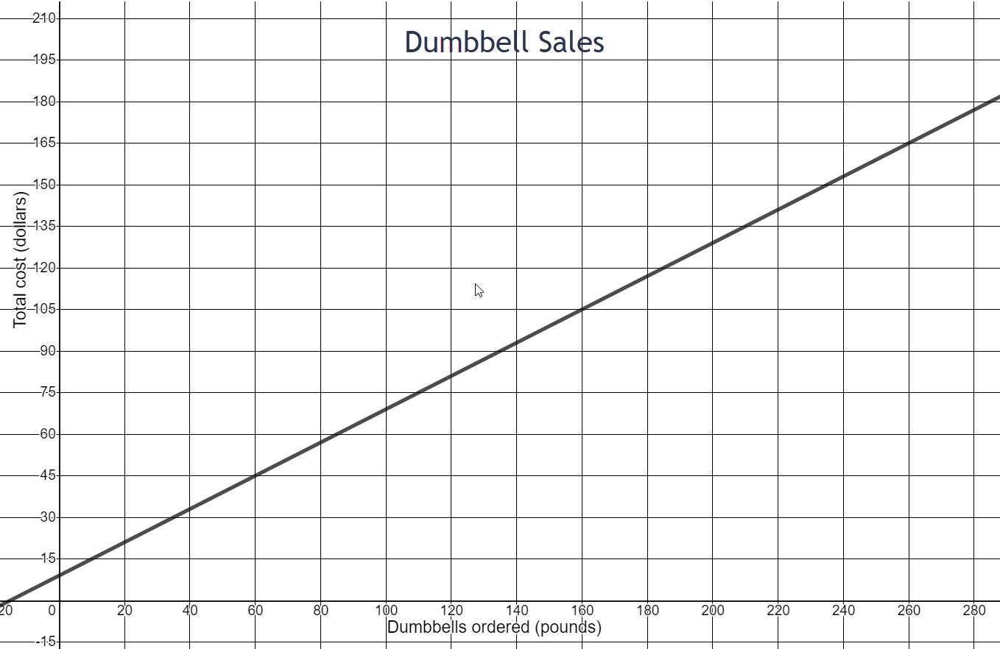
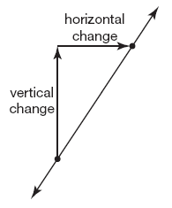
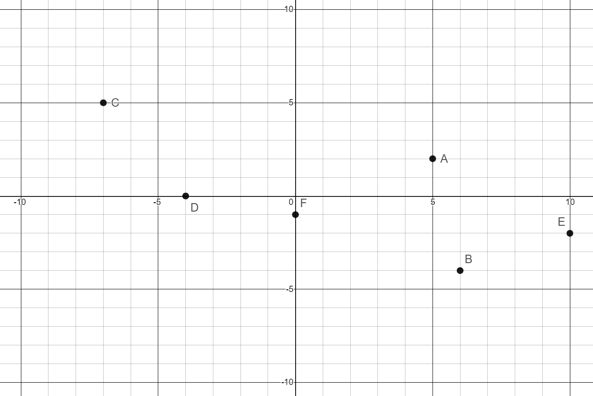
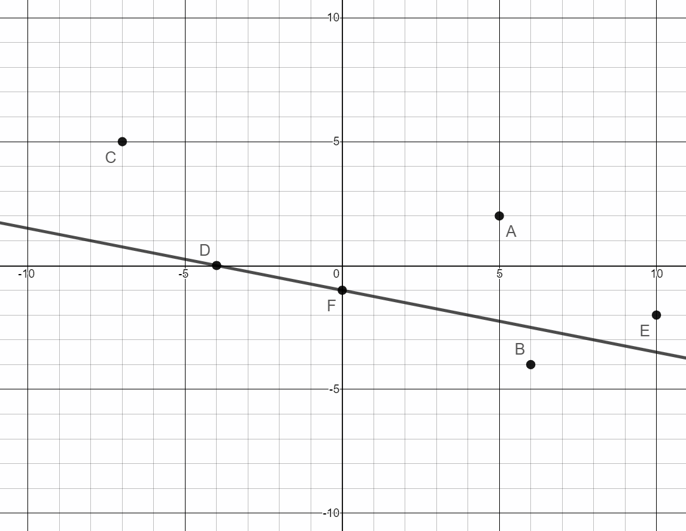
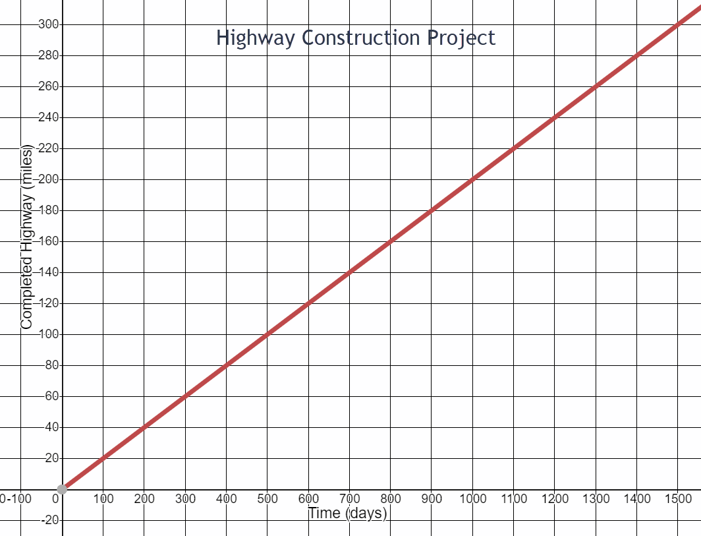
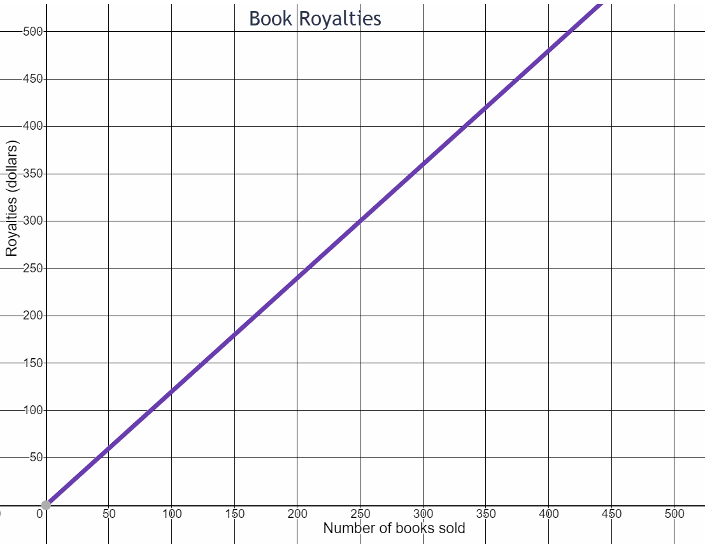

Linear Modeling and Logic Unit
4.1 Rate of Change
-

- What is the total cost for 60 pounds of dumbbells ordered? Write this as an ordered pair.
- What is the total cost for 160 pounds of dumbbells ordered? Write this as an ordered pair.
- How much more does it cost for 160 pounds of dumbbells compared to 60 pounds? Write this rate of change in fraction form.
- How much more do you pay for each additional pound ordered?
- What is the initial cost of ordering dumbbells? (Look at the y-intercept where dumbbells ordered is 0 pounds.) What might this initial cost represent?
(60,45)
(160,105)
\(\begin{equation} \frac{105-45}{160-60}=\frac{\$60}{100 \text{ lbs}}=\frac{\$3}{5 \text{ lbs}} \end{equation}\)
$.60
$9 Could be the cost of shipping or processing fee or the cost of a weight bar.
\begin{equation}\text{slope} =\frac{\text { vertical change }}{\text { horizontal change }} \end{equation}
-

Write the ordered pair for each point on the graph.
- Point A
- Point B
- Point C
- Point D
- Point E
- Point F
- Draw a line passing through points D and F
- Name the y-intercept of this line.
- Name the x-intercept of this line.
(5,2)
(6,-4)
(-7,5)
(-4,0)
(10,-2)
(0,-1)

Point F (0,-1)
Point D (-4,0)
-
Highway Construction Project

- Consider the Highway Construction Project graph. How many miles had been completed at the beginning of the project? Write this as an ordered pair.
- How many miles of highway were completed in 100 days? Write this as an ordered pair.
- What is the change in highway miles for each 100 days on the project? Write this rate of change as a fraction.
- How many miles were completed in 5 days?
- How many miles were completed in 1 day?
- How many miles were completed in 300 days? Write this as an ordered pair.
- How much time did it take to complete 200 miles of highway? Write this as an ordered pair.
- How many highway miles were completed between day 300 and day 1000 of the project?
- What is the change in highway miles for each 700 days on the project? Write this rate of change as a fraction. Reduce your fraction.
zero miles (0,0)
20 miles (100,20)
\(\begin{equation}\frac{20\text{ miles}}{100\text{ days}}\end{equation}\)
1 miles
0.2 miles
60 miles (300,60)
200 miles (1000,200)
140 miles
\(\begin{equation}\frac{140}{700}=\frac{1}{5}\text{ miles per day}\end{equation}\)
-

- How much in royalties does the author receive for selling 0 books?
- How much in royalties does the author receive for selling 250 books?
- What is the rate of change in royalties for every 250 books sold? Write this rate of change as a fraction.
- How much does the author receive in royalties for each book sold?
$0
$300
\(\begin{equation} \frac{\$300}{250 \text{ books}} \end{equation}\)
$6 for 5 books which is $1.20 per book